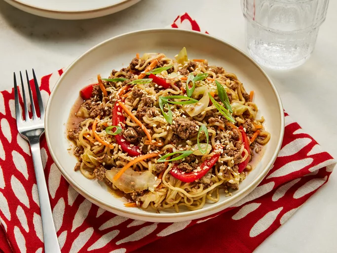

One Pot Beef Ramen Noodles

How to make one pot beef ramen noodles:
Nothing beats this delicious noodle dish when you're in a hurry or just in the mood for some asian food. Beef, noodles and vegetables. As easy as that.
Ingredients
- Ground beef
- Cabbage
- Red bell pepper
- Minced garlic
- Chicken stock
- Soy sauce
- Hoicin sauce
- Instant ramen noodles
- Carrots
- Scallions
- Sesame seeds
Step by Step
- Gather all the ingredients
- Heat a medium Dutch oven over medium-high heat. Add the beef; cook, stirring occasionally to break the meat into crumbles, until browned and no longer pink, about 5 minutes.
- Stir in cabbage, bell peppers, and garlic. Cook, stirring often, until vegetables begin to wilt and cabbage is translucent, about 5 minutes.
- Stir in chicken broth, soy sauce, hoisin sauce; bring it to a boil over medium high heat. Once at a boil, nestle in ramen, spooning the beef mixture over the ramen as needed to make sure the ramen is fully submerged.
Reduce the heat to medium. Cover and cook, undisturbed, until the ramen is tender, 5 to 7 minutes. Stir in carrots. Cover and remove from heat. Let sit until carrots are tender, 1 to 2 minutes.
- Garnish with scallions and sesame seeds. Serve.
Home